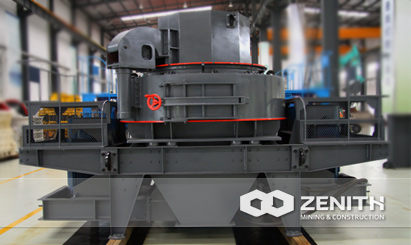
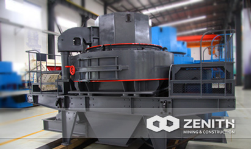
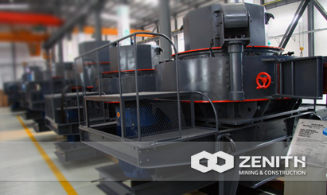
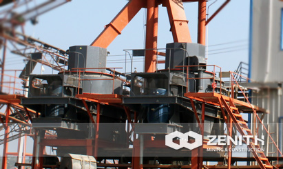

- 
- 
- 
- 
B VSI Crusher--Sand Making Machine
Zenith B Series VSI Crusher, also called as sand making machine, which is one of the most advanced sand making machine nowadays.
It introduces high quality roller bearings, which ensure the smooth running of main unit. Personalized design is used in upper cap, sand making machine is easy and convenient to maintain and replace spare parts. Sand making machine is our sole patent using central feeding & central cascade feeding, which can be changed based on customers' needs.
Sand making machine Overview
Sand making machine is our sole patent that using central feeding & central cascade feeding, which can be changed based on customers' needs. Adopting German technology as well as innovating the manufacture craft, every index of VSI crusher has achieved to world's leading standard. Zenith's VSI sand making machine can be operated for 720 hours without any stop. Nowadays, Zenith's VSI crusher has taken the place of hammer crusher, roller crusher, roller ball mill, etc. In a word, the Zenith's VSI crusher has become the mainstream equipment in sand making business.
Widely Application of Sand Making Machine
VSI sand making machine is very suitable for making sands for building and construction, such as expressway and railway building, hydropower station construction, bridge and tunnel building, concrete batching plant, etc. When it comes to the shaping of gravels used in concrete aggregates, the VSI sand making machine is the best choice, especially for the strength of concrete above 60°C or which required being freeze proof and leak proof. In the fine crushing section, VSI crusher is the substitute of impact crusher, and it is much better in terms of main performance indexes.
As for processing materials, the sand making machine can be used to deal with granite, limestone, basalt, quartz, river stone, sand gravel, gold ore, iron ore, copper ore, manganese, bauxite, coal, and pebble stone, etc.
VSI Sand making machine Benefits and advantages
- Advanced double pump oil lubrication system minimize the maintenance frequency.
- High precision roller bearing, smooth main unit running, and long service time.
- Hydraulic lift cap, easy and convenient replacement and maintenance.
- Special dustproof seal system, outside powder is prevented from entering oil mouth.
- Unique feeding method, change between central feeding and central feeding with cascade feeding make "rock on rock" and "rock on iron" possible, both crushing and shaping are achieved.
- Particular material throw head design and reasonable material selection prolong the service time.
The tacnology data
| Model | Feed at center&sides | Feed at center | Soft Material | Hard Material | REV (r/min) | Power (kw) | Motor Model | Machine Size (mm) |
|---|---|---|---|---|---|---|---|---|
| Capacity (t/h) | Max.Feeding (mm) | |||||||
| B-7611 | 120-180 | 60-90 | 35 | 30 | 1700-1890 | 4-55×2 | Y250M-4/55 | 4100×2250×2258 |
| B-8518 | 200-260 | 100-130 | 40 | 35 | 1520-1690 | 4-90×2 | Y280M-4/90 | 4140×2280×2425 |
| B-9526 | 300-380 | 150-190 | 45 | 40 | 1360-1510 | 4-132×2 | Y315M-4/132 | 4560×2450×2780 |
| B-1140 | 450-520 | 225-260 | 50 | 45 | 1180-1310 | 4-200×2 | Y315L2-4/200 | 5100×2690×3200 |